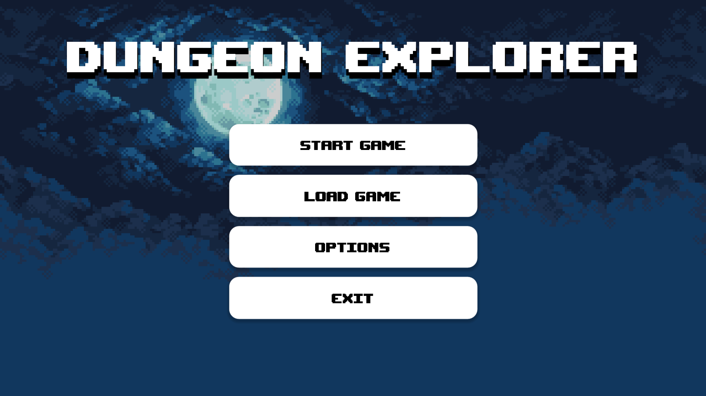
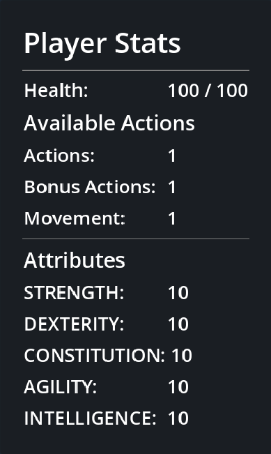
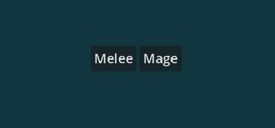
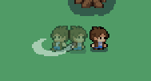
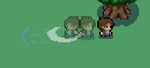

For this project I served as scrum master and developer as well as handling most of the git integration, high-level source code organization and testing.
My development efforts focused around the player character. I developed the stats and health tracking systems, the class-based attack type system, and the undo-able shadow animation system.
Much of the player functionality was created using Composition for easier modification (less coupling) and to enable reuse of some components in enemy code. Components were created to handle Actions (we used a DnD style Action/Bonus/Movement system), Health, Movement, and the shadow animation effect.
In addition to components, more traditional class-like structures representing smaller chunks of code were created to serve as re-usable or multi-instance resources for the player class and/or the components. The most significant of these were the Pose, MagicPose, and MagicSpell scenes used by the shadow component.
|
The health component was very small, but serves as a good example/argument for the usefuleness of componentization (the same benefits of any approach to re-using code, like classes). Internally, the component was built to track two integer variables - the maximum health and current health - and send signals (a very useful Godot feature implementing a version of the observer pattern with little effort on the developer's part) on certain thresholds or events, as well as a set of functions allowed the parent to modify these variables. At 50 lines of mostly boilerplate code (including empty lines) this could easily have been included in the player, and any enemies. However, its being a component proved useful when we decided to add a resurrection feature where a player could spend perk points gained through the dungon on revival tokens. To implement the new functionality, we simply added a variable tracking revival tokens as well as a check in the function called whenever health changed to see if any revival tokens were present and act accordingly. Those few lines of code implemented our new feature in the player class, which used the feature, and would allow us to have an enemy using the health component do the same, without breaking existing functionality in either the player or enemies. The stat component functioned very similarly to the health component, with the main difference in implementation being the use of a dictionary internally to track the stats instead of individual variables. We chose to use a dictionary to allow additional flexibility so that enemies and players could use the same component but include or exclude different stats if needed. While the idea could have been useful in a larger scale game, in our game we ultimately decided that the additional complexity proved more detrimental than beneficial - particularly since that flexibility never ended up being used. The system remained in place, since it worked, but would likely have been removed or re-worked had we found a reason to re-implement the component. |
 |
|  | The player had two options for a class - a pure melee, strength-based character or a mid-ranged mage character. Our ultimate (stretch) goal was to give mages more than one spell, granting them greater utility than a melee character at the cost of damage and/or health, but a combination of time and artistic constraints (not a one of us could draw) kept us from implementing the full system. As it is, the melee character has a simple sword swing attack which requires the player to be right next to an enemy. A mage, however, has a magical projectile that flies off the sword during a swing and travels several squares forward, damaging any enemy it comes into contact with. |
If we took this game farther in development and attempted to market it, this would be one of our unique features/selling points that set our game apart. During a player's turn, they can take multiple individual actions (again, akin to DnD) including multiple movements and attacks. Since we include perks that can increase the amount of actions you can take without strict limits, it was important to give the player a representation of what actions they had already undertaken during their turn. This became doubly important with the inclusion of an 'undo' feature that allows re-planning one or more actions all the way back to the beginning of the turn. To visually represent actions taken, we built a system which displayed a sprite representing the player's action at each location once they had moved from it. If a player moved, a semi-transparent sprite facing in the direction of the movement was placed in the spot they were moving from. If they attacked, once they moved away an similarly semi-transparent sprite would show in that location in mid-attack animation facing the appropriate direction. For mages, a sprite would also appear representing the final/fadout position for the magical arc attack.
 This system was implemented using instantiable objects called 'poses' which the shadow component would place at the player's location when the appropriate conditions were met. For melee characters all poses could be represented with a simple pose that found the appropriate keyframe from the player's spritesheet based on the type of action and direction. For a mage, a subclass of the same pose was created which included the additional functionality needed to place the magic arc attack. Once placed, a pose is stored in an array so that individual poses can be updated and/or removed.
Since the player has multiple actions during a turn, it was deemed necessary to grant the player the ability to undo
actions taken before they finished/confirmed the end of their turn. To this end, all actions the player takes are
stored as Actions. Actions served as a superclass for Movement, Attacks, and so on. The Action class itself is not
to be instantiated (though Godot 4 doesn't currently support abstract classes, so it is just a noop); rather, each
type of action treats the Action class as an abstract class and implements the function set_undo which
takes arguments needed to undo the action - for example, the attack action takes a list of affected enemies and a
damage amount so that the enemie's lost health can be restored if the action is undone.
The execution of this complex behavior is handled internally by the action component with a simple call to its
undo function so the player merely calls that, and the same undo function for the shaodow
component whenever the player hits the undo key. Setting up and undo-able action only slightly more complex - on
receiving the appropriate signal the player class instantiates an action and calls the set_undo
function with the appropriate arguments (action-dependent).